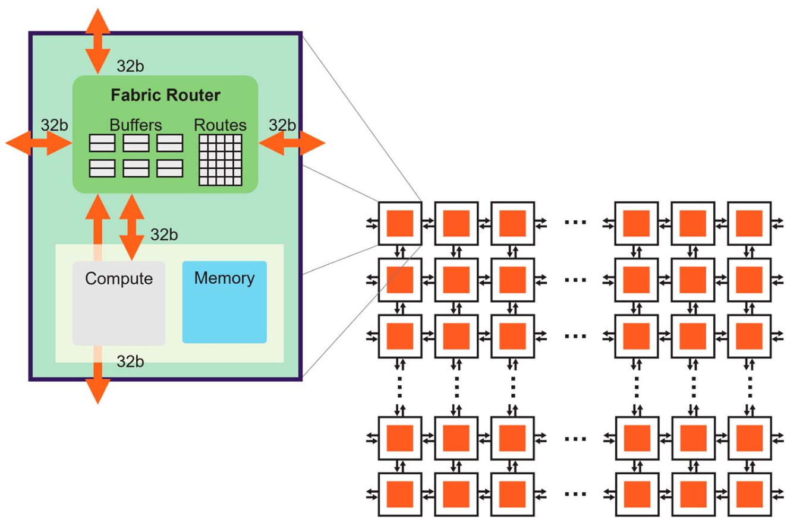
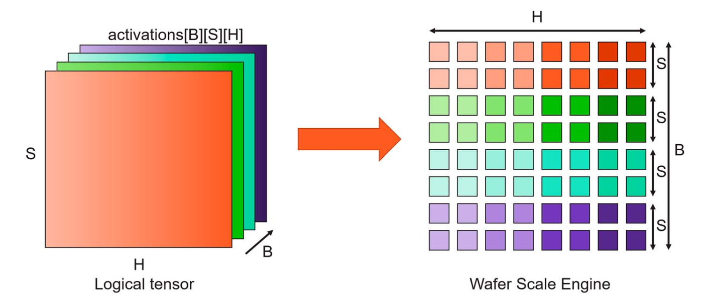
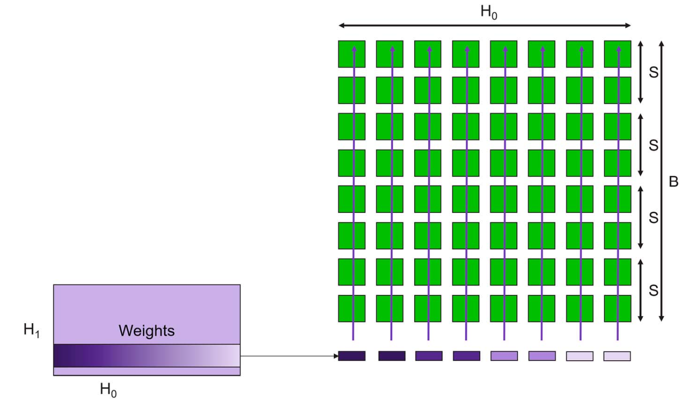

Note
鼎桥 (3G/4G西门子进入中国)
爱立信 Master Software Developer/Indoor Software Architect (平台产品，发货量最大)
中国电子-中微电 系统架构建模 负责模拟器组，function simulator/performance simulator/algorithm
南风一号，部分特性
南风二号，架构预研和最初的架构建模，性能评估 (DDR和benchmark)
广东省科创委的项目（其中模拟器部分，4个专利）
基于模拟器预研AI框架的支持，pytorch
传统的冯诺依曼架构只是为了解决CPU指令和数据并发的问题，当时并没有GPU
目前GPU主要提升算力（通过一些专用单元）和HBM（主要增加IO，从而增加带宽（引脚的数据速率较难））
从根本上解决问题可能得考虑新的架构，近存计算或存内计算肯定是更适合GPU
HMB
SeDRAM
数据从内存传输到计算单元需要的功耗大约是计算本身的200倍，真正用于计算的时间和功耗占比大大降低
现在的一些AI大模型实际也是数据的搬运时间占比更高
MVP介绍
MVP 2.1
分级译码的好处是某些指令在FE阶段就退出
指令的并行性在某些情况下高于lane数量
MVP 3.0
GPGPU-SIM
深度学习框架与大语言模型
深度学习框架
PyTorch
PyTorch 是一个开源的深度学习框架，由 Facebook 的人工智能研究小组（FAIR）开发
TensorFlow
TensorFlow 是一个由 Google 开发和维护的开源深度学习框架。它广泛应用于各种机器学习和深度学习任务，包括图像分类、自然语言处理、语音识别等。TensorFlow 提供了一个灵活、全面的工具集，支持从研究到生产的全流程开发。
Keras
从 TensorFlow 2.0 开始，Keras 成为其高级 API，简化了深度学习模型的构建、训练和验证过程。
大语言模型
生产式AI模型进行应用分析，评估模型在不同硬件的架构上的性能瓶颈，分析内存占用情况等；
针对应用分析结果设计关键硬件模块的架构，包括数据通路，控制逻辑，计算和访存接口等；
构建高精度的硬件架构的仿真器和性能、面积、功耗模型；
依据仿真器和模型的结果做架构探索，为硬件架构设计提供理论依据；
GPT-3
GPT-3具有1750亿个参数，计算量非常大，尤其在推理阶段，大量的矩阵乘法操作是主要的计算瓶颈 每个推理步骤需要大量的内存读写操作，内存带宽可能成为瓶颈。 尽管GPU可以通过并行计算提高效率，但由于模型规模庞大，单个GPU可能无法完全容纳模型，导致多GPU通信成为瓶颈 使用混合精度计算和模型分片等优化策略可以在一定程度上降低内存占用
LLaMA
LLaMA模型的参数量也非常大，计算复杂度高，特别是在多层注意力机制和前馈网络的计算中。 型训练和推理需要频繁访问内存，内存带宽是一个关键瓶颈。 类似GPT-3，LLaMA模型需要大量内存来存储模型权重。
Qwen
Qwen模型的任务复杂度较高，可能涉及更多复杂的前处理和后处理步骤，增加了计算负担。 由于任务复杂度高，处理时间可能较长，实时性要求高的应用可能受限。 处理复杂任务需要更长的上下文存储，占用更多内存。 可以通过剪枝、量化等技术优化模型，减少内存需求。
Stable Diffusion
图像生成任务需要大量的卷积计算和反卷积计算，这在GPU上有很高的计算需求。 生成高清图像的实时性要求高，计算延迟可能成为瓶颈。 大量的卷积核参数需要占用显存 每层卷积和反卷积操作会产生大量的中间特征图，这些数据需要存储在显存中
Hugging Face
是一个在自然语言处理（NLP）领域非常流行的开源平台和工具集，它为开发者提供了丰富的预训练模型、数据集和强大的库，便于快速实现和部署各种NLP任务。
-
vLLM是一个高效的深度学习库，用于训练和推理大规模语言模型。它设计目标是优化大型语言模型（如GPT-3、BERT等）的性能和资源利用率，特别是在内存管理和计算效率方面。 vLLM通过优化内存分配和使用策略，显著降低了内存占用。它使用技术如动态内存分配和内存回收来减少内存碎片和浪费 支持混合精度训练，通过减少浮点数精度（如使用FP16而不是FP32），有效降低显存占用，同时保持计算精度。 vLLM提供了模块化和可扩展的架构，方便开发者根据具体需求进行自定义和扩展 通过高效的内存管理和计算优化，vLLM在相同硬件资源下能够处理更大规模的模型和数据集 在多GPU和分布式环境下，vLLM能够实现近乎线性的加速效果，大幅缩短模型训练和推理时间 vLLM通过在内存管理、并行计算、架构设计和I/O处理方面的多重优化，提供了一种高效、灵活的大规模语言模型训练和推理解决方案。它的优势在于显著提升了资源利用效率和计算性能，同时保持了良好的灵活性和易用性，适用于各种大规模语言模型的开发和应用。
LightLLM
LightLLM是一个专为大规模语言模型（LLM，Large Language Models）优化的高效库。它旨在通过一系列技术手段和算法优化，提升语言模型的训练和推理效率，同时减少资源占用。 LightLLM通过先进的内存分配和优化策略，有效降低了内存占用。其内存管理模块能够动态调整内存使用，避免内存碎片和浪费。 优化数据加载和预处理流程，减少I/O瓶颈，确保训练和推理过程的流畅进行
芯片性能分析与仿真
性能分析工具
Gem5
Gem5是一款开源的计算机体系结构模拟器，被广泛用于计算机系统研究、教育和性能评估。 模拟整个计算机系统，包括CPU、内存、I/O设备等，适用于研究操作系统、硬件和软件之间的交互 支持多种CPU架构，包括x86、ARM、RISC-V、MIPS、SPARC等 Gem5采用模块化设计，用户可以根据需要添加、删除或修改模块，定制自己的模拟环境 Gem5能够生成详细的性能统计数据，包括指令计数、缓存命中率、分支预测精度、内存带宽等，为性能分析提供全面支持 模拟完成后，收集并分析Gem5生成的统计数据，根据研究目标评估系统性能或行为 通过修改和模拟不同的处理器架构，研究其性能、功耗、面积等特性，优化处理器设计 研究不同的缓存策略、内存架构、存储设备对系统性能的影响，优化存储系统设计 由于详细模拟系统行为，Gem5的模拟速度较慢，尤其是全系统模拟，需要较长时间才能完成一次模拟实验。
SST (Structure Simulation Toolkit)
SST 旨在为高性能计算（HPC）系统的设计、开发和优化提供一个灵活、可扩展的模拟环境。 SST 采用模块化设计，用户可以通过组合不同的模拟模块来构建自定义的模拟环境。 SST 支持多尺度模拟，从微观的电路级别模拟到宏观的系统级别模拟，适应不同的研究需求 支持异构计算系统的模拟，包括传统的CPU、GPU以及新兴的加速器（如FPGA） SST 生成详细的性能数据，包括处理器利用率、内存访问模式、网络通信延迟等，支持深入的性能分析和优化 用户可以通过编写配置文件来灵活控制模拟参数和运行选项，适应不同的模拟场景和需求。
性能建模与测试
Timeloop (https://github.com/NVlabs/timeloop)
Timeloop是一种面向深度学习加速器的设计和性能评估工具，特别针对嵌入式设备上的神经网络推理。它帮助架构师和设计师分析和优化加速器的性能和功耗。 Timeloop允许用户通过配置文件详细描述加速器的架构。这包括计算单元、存储器层次结构、数据移动路径和控制逻辑等。 用户可以描述要在加速器上运行的神经网络模型，包括层类型（如卷积层、全连接层）、输入数据尺寸、权重尺寸和计算模式等。 Timeloop支持自动化的设计空间探索，帮助用户在大量的可能设计中找到最优的架构配置。它可以评估不同参数组合下的性能，寻找最佳的设计方案。
Maestro
Maestro 是一种用于建模和评估深度神经网络 (DNN) 加速器设计的工具。它由卡内基梅隆大学的研究人员开发，旨在为设计者提供一个灵活的框架来分析和优化 DNN 加速器的性能、能效和硬件利用率 Maestro 支持卷积神经网络 (CNN)、循环神经网络 (RNN)、全连接网络 (FCN) 等多种 DNN 算法的建模 Maestro 提供详细的性能和能效分析工具，可以评估加速器在执行不同 DNN 工作负载时的表现 支持分析计算延迟、数据传输延迟、能耗、硬件利用率等多种指标
性能测试与基准测试
Accel-Sim
Cerebras
Wafer Scale Engine
Core Architecture
Half of the silicon area is used by 48KB of SRAM
100X compute vs dram（traditional by using local caching or local register and accumulators). But cerebras provides full memory bandwidth to all data path at full performance. enables memory bandwidth that is equal to the operand bandwidth of the core data path
192-bit access per cycle from two 64-bit reads and one 64-bit write, and 256B cache
16 general-purpose registers and six-stage pipeline
44 of data structure register as operands to the instruction of tensor
Instructions for each individual core are generated by the cerebras software stack and compiler which lowers ML programs from frameworks, such as TensorFlow or pytorch
Entire compute fabric is a data flow engine: cores receive data, the hardware triggers a lookup of instructions to run, the lookup is entirely based on what is received
Fabric Router
Wafer Matrix-Multiply(MatMul) Array
 Note
SRAM memory design is higher density than traditional caches because it is not a cache; it does not have overhead such as multiporting, tagging, and cache management logic. SRAM density is lower than that of DRAM, but the wafer-scale integration is used to make up the capacity to achieve DRAM equivalent capacity per chip
WSE-2 memory bandwidth 400TB/s A100 memory bandwidth 2TB/s
56x larger than the largest GPU today 850000 core 20PB/s of memory bandwidth
H100
B200
Tech |
B200 |
H100 |
|---|---|---|
GPU |
2.99 |
On a stick! |
GPU memory |
1.44TB, 64TB/s HBM3e bandwidth |
|
Performance |
72peta FP8 training and 144peta FP4 inference |
AI
cfu-playground
SIMT: 无需开发者费力的把数据拼凑成合适的矢量长度，并且SIMT允许每个线程有不同的分支 SIMD: 不能并行的执行有条件的跳转的函数